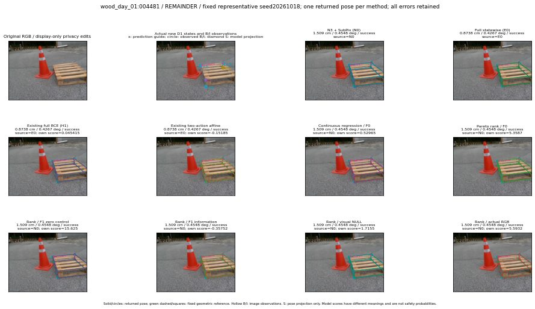

실선은 반환 자세, 초록 점선은 고정 기하 참조입니다. S는 영상 관측이 아닙니다. 점수는 모델별 의미가 다르며 보정된 안전 확률이 아닙니다. 개인정보 처리는 표시 사본에만 적용했습니다.
| 방법·seed | 위치 / 회전 / 공동성공 | 실제 출처 | 선택 후보 | 각 모델 자체 점수 |
|---|---|---|---|---|
| N0 | 1.509 cm / 0.4548 deg / success | N0 | N/A | N/A |
| E0 | 0.8738 cm / 0.4267 deg / success | E0 | N/A | N/A |
| E0_REGENERATED | 0.8738 cm / 0.4267 deg / success | E0 | E0_REGENERATED | N/A |
| POSEFIX_SUBPIX_PF_ANCHOR | 2.746 cm / 0.781 deg / success | OTHER | N/A | N/A |
| POSEFIX_SUBPIX_YOLO_ANCHOR | 2.746 cm / 0.781 deg / success | OTHER | N/A | N/A |
| D1_H1_MLP_s20261018 | 0.8738 cm / 0.4267 deg / success | E0 | E0_REGENERATED | 0.045414820313453674 |
| D1_H1_MLP_s20261019 | 0.8738 cm / 0.4267 deg / success | E0 | E0_REGENERATED | -0.3938979506492615 |
| D1_H1_MLP_s20261020 | 0.8738 cm / 0.4267 deg / success | E0 | E0_REGENERATED | 0.21088969707489014 |
| D1_H1_PAIR_MLP_s20261018 | 0.8738 cm / 0.4267 deg / success | E0 | E0_REGENERATED | -0.653565526008606 |
| D1_H1_PAIR_MLP_s20261019 | 0.8738 cm / 0.4267 deg / success | E0 | E0_REGENERATED | -0.5199103951454163 |
| D1_H1_PAIR_MLP_s20261020 | 0.8738 cm / 0.4267 deg / success | E0 | E0_REGENERATED | 0.06696223467588425 |
| D1_H1_PAIR_ROLE_AFFINE_s20261018 | 0.8738 cm / 0.4267 deg / success | E0 | E0_REGENERATED | -0.15185359120368958 |
| D1_H1_PAIR_ROLE_AFFINE_s20261019 | 1.509 cm / 0.4548 deg / success | N0 | N0 | -0.27915775775909424 |
| D1_H1_PAIR_ROLE_AFFINE_s20261020 | 1.509 cm / 0.4548 deg / success | N0 | N0 | -0.1759011298418045 |
| R_CONT_F0_s20261018 | 1.509 cm / 0.4548 deg / success | N0 | N0 | 0.5296472311019897 |
| R_CONT_F0_s20261019 | 0.8738 cm / 0.4267 deg / success | E0 | E0_REGENERATED | 0.6050469875335693 |
| R_CONT_F0_s20261020 | 0.8738 cm / 0.4267 deg / success | E0 | E0_REGENERATED | 0.6116734743118286 |
| R_ORDER_F0_s20261018 | 1.509 cm / 0.4548 deg / success | N0 | N0 | 5.35867977142334 |
| R_ORDER_F0_s20261019 | 1.509 cm / 0.4548 deg / success | N0 | N0 | 4.843316078186035 |
| R_ORDER_F0_s20261020 | 1.509 cm / 0.4548 deg / success | N0 | N0 | -3.2705893516540527 |
| R_ORDER_F1_ZERO_s20261018 | 1.509 cm / 0.4548 deg / success | N0 | N0 | 15.624947547912598 |
| R_ORDER_F1_ZERO_s20261019 | 1.509 cm / 0.4548 deg / success | N0 | N0 | 3.8856465816497803 |
| R_ORDER_F1_ZERO_s20261020 | 1.509 cm / 0.4548 deg / success | N0 | N0 | 8.420241355895996 |
| R_ORDER_F1_s20261018 | 1.509 cm / 0.4548 deg / success | N0 | N0 | -0.35751596093177795 |
| R_ORDER_F1_s20261019 | 1.509 cm / 0.4548 deg / success | N0 | N0 | 4.442092418670654 |
| R_ORDER_F1_s20261020 | 1.509 cm / 0.4548 deg / success | N0 | N0 | 4.551097393035889 |
| V_ORDER_NULL_s20261018 | 1.509 cm / 0.4548 deg / success | N0 | N0 | 1.7155314683914185 |
| V_ORDER_NULL_s20261019 | 1.509 cm / 0.4548 deg / success | N0 | N0 | 0.7742875814437866 |
| V_ORDER_NULL_s20261020 | 1.509 cm / 0.4548 deg / success | N0 | N0 | 5.215123176574707 |
| V_ORDER_RGB_s20261018 | 1.509 cm / 0.4548 deg / success | N0 | N0 | 5.593163967132568 |
| V_ORDER_RGB_s20261019 | 1.509 cm / 0.4548 deg / success | N0 | N0 | 1.1753908395767212 |
| V_ORDER_RGB_s20261020 | 1.509 cm / 0.4548 deg / success | N0 | N0 | -3.4147450923919678 |